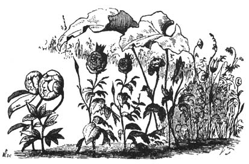
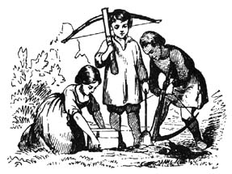

Read with Audio
Y poor flowers are quite dead,” said little Ida, “they were so pretty yesterday evening, and now all the leaves are hanging down quite withered. What do they do that for,” she asked, of the student who sat on the sofa; she liked him very much, he could tell the most amusing stories, and cut out the prettiest pictures; hearts, and ladies dancing, castles with doors that opened, as well as flowers; he was a delightful student. “Why do the flowers look so faded to-day?” she asked again, and pointed to her nosegay, which was quite withered. “Don’t you know what is the matter with them?” said the student. “The flowers were at a ball last night, and therefore, it is no wonder they hang their heads.” “But flowers cannot dance?” cried little Ida. “Yes indeed, they can,” replied the student. “When it grows dark, and everybody is asleep, they jump about quite merrily. They have a ball almost every night.” “Can children go to these balls?” “Yes,” said the student, “little daisies and lilies of the valley.” “Where do the beautiful flowers dance?” asked little Ida. “Have you not often seen the large castle outside the gates of the town, where the king lives in summer, and where the beautiful garden is full of flowers? And have you not fed the swans with bread when they swam towards you? Well, the flowers have capital balls there, believe me.” “I was in the garden out there yesterday with my mother,” said Ida, “but all the leaves were off the trees, and there was not a single flower left. Where are they? I used to see so many in the summer.”
“They are in the castle,” replied the student. “You must know that as soon as the king and all the court are gone into the town, the flowers run out of the garden into the castle, and you should see how merry they are. The two most beautiful roses seat themselves on the throne, and are called the king and queen, then all the red cockscombs range themselves on each side, and bow, these are the lords-in-waiting. After that the pretty flowers come in, and there is a grand ball. The blue violets represent little naval cadets, and dance with hyacinths and crocuses which they call young ladies. The tulips and tiger-lilies are the old ladies who sit and watch the dancing, so that everything may be conducted with order and propriety.” “But,” said little Ida, “is there no one there to hurt the flowers for dancing in the king’s castle?” “No one knows anything about it,” said the student. “The old steward of the castle, who has to watch there at night, sometimes comes in; but he carries a great bunch of keys, and as soon as the flowers hear the keys rattle, they run and hide themselves behind the long curtains, and stand quite still, just peeping their heads out. Then the old steward says, ‘I smell flowers here,’ but he cannot see them.” “Oh how capital,” said little Ida, clapping her hands. “Should I be able to see these flowers?” “Yes,” said the student, “mind you think of it the next time you go out, no doubt you will see them, if you peep through the window. I did so to-day, and I saw a long yellow lily lying stretched out on the sofa. She was a court lady.” “Can the flowers from the Botanical Gardens go to these balls?” asked Ida. “It is such a distance!” “Oh yes,” said the student “whenever they like, for they can fly. Have you not seen those beautiful red, white. and yellow butterflies, that look like flowers? They were flowers once. They have flown off their stalks into the air, and flap their leaves as if they were little wings to make them fly. Then, if they behave well, they obtain permission to fly about during the day, instead of being obliged to sit still on their stems at home, and so in time their leaves become real wings. It may be, however, that the flowers in the Botanical Gardens have never been to the king’s palace, and, therefore, they know nothing of the merry doings at night, which take place there. I will tell you what to do, and the botanical professor, who lives close by here, will be so surprised. You know him very well, do you not? Well, next time you go into his garden, you must tell one of the flowers that there is going to be a grand ball at the castle, then that flower will tell all the others, and they will fly away to the castle as soon as possible. And when the professor walks into his garden, there will not be a single flower left. How he will wonder what has become of them!” “But how can one flower tell another? Flowers cannot speak?” “No, certainly not,” replied the student; “but they can make signs. Have you not often seen that when the wind blows they nod at one another, and rustle all their green leaves?” “Can the professor understand the signs?” asked Ida. “Yes, to be sure he can. He went one morning into his garden, and saw a stinging nettle making signs with its leaves to a beautiful red carnation. It was saying, ‘You are so pretty, I like you very much.’ But the professor did not approve of such nonsense, so he clapped his hands on the nettle to stop it. Then the leaves, which are its fingers, stung him so sharply that he has never ventured to touch a nettle since.” “Oh how funny!” said Ida, and she laughed. “How can anyone put such notions into a child’s head?” said a tiresome lawyer, who had come to pay a visit, and sat on the sofa. He did not like the student, and would grumble when he saw him cutting out droll or amusing pictures. Sometimes it would be a man hanging on a gibbet and holding a heart in his hand as if he had been stealing hearts. Sometimes it was an old witch riding through the air on a broom and carrying her husband on her nose. But the lawyer did not like such jokes, and he would say as he had just said, “How can anyone put such nonsense into a child’s head! what absurd fancies there are!”  But to little Ida, all these stories which the student told her about the flowers, seemed very droll, and she thought over them a great deal. The flowers did hang their heads, because they had been dancing all night, and were very tired, and most likely they were ill. Then she took them into the room where a number of toys lay on a pretty little table, and the whole of the table drawer besides was full of beautiful things. Her doll Sophy lay in the doll’s bed asleep, and little Ida said to her, “You must really get up Sophy, and be content to lie in the drawer to-night; the poor flowers are ill, and they must lie in your bed, then perhaps they will get well again.” So she took the doll out, who looked quite cross, and said not a single word, for she was angry at being turned out of her bed. Ida placed the flowers in the doll’s bed, and drew the quilt over them. Then she told them to lie quite still and be good, while she made some tea for them, so that they might be quite well and able to get up the next morning. And she drew the curtains close round the little bed, so that the sun might not shine in their eyes. During the whole evening she could not help thinking of what the student had told her. And before she went to bed herself, she was obliged to peep behind the curtains into the garden where all her mother’s beautiful flowers grew, hyacinths and tulips, and many others. Then she whispered to them quite softly, “I know you are going to a ball to-night.” But the flowers appeared as if they did not understand, and not a leaf moved; still Ida felt quite sure she knew all about it. She lay awake a long time after she was in bed, thinking how pretty it must be to see all the beautiful flowers dancing in the king’s garden. “I wonder if my flowers have really been there,” she said to herself, and then she fell asleep. In the night she awoke; she had been dreaming of the flowers and of the student, as well as of the tiresome lawyer who found fault with him. It was quite still in Ida’s bedroom; the night-lamp burnt on the table, and her father and mother were asleep. “I wonder if my flowers are still lying in Sophy’s bed,” she thought to herself; “how much I should like to know.” She raised herself a little, and glanced at the door of the room where all her flowers and playthings lay; it was partly open, and as she listened, it seemed as if some one in the room was playing the piano, but softly and more prettily than she had ever before heard it. “Now all the flowers are certainly dancing in there,” she thought, “oh how much I should like to see them,” but she did not dare move for fear of disturbing her father and mother. “If they would only come in here,” she thought; but they did not come, and the music continued to play so beautifully, and was so pretty, that she could resist no longer. She crept out of her little bed, went softly to the door and looked into the room. Oh what a splendid sight there was to be sure! There was no night-lamp burning, but the room appeared quite light, for the moon shone through the window upon the floor, and made it almost like day. All the hyacinths and tulips stood in two long rows down the room, not a single flower remained in the window, and the flower-pots were all empty. The flowers were dancing gracefully on the floor, making turns and holding each other by their long green leaves as they swung round. At the piano sat a large yellow lily which little Ida was sure she had seen in the summer, for she remembered the student saying she was very much like Miss Lina, one of Ida’s friends. They all laughed at him then, but now it seemed to little Ida as if the tall, yellow flower was really like the young lady. She had just the same manners while playing, bending her long yellow face from side to side, and nodding in time to the beautiful music. Then she saw a large purple crocus jump into the middle of the table where the playthings stood, go up to the doll’s bedstead and draw back the curtains; there lay the sick flowers, but they got up directly, and nodded to the others as a sign that they wished to dance with them. The old rough doll, with the broken mouth, stood up and bowed to the pretty flowers. They did not look ill at all now, but jumped about and were very merry, yet none of them noticed little Ida. Presently it seemed as if something fell from the table. Ida looked that way, and saw a slight carnival rod jumping down among the flowers as if it belonged to them; it was, however, very smooth and neat, and a little wax doll with a broad brimmed hat on her head, like the one worn by the lawyer, sat upon it. The carnival rod hopped about among the flowers on its three red stilted feet, and stamped quite loud when it danced the Mazurka; the flowers could not perform this dance, they were too light to stamp in that manner. All at once the wax doll which rode on the carnival rod seemed to grow larger and taller, and it turned round and said to the paper flowers, “How can you put such things in a child’s head? they are all foolish fancies;” and then the doll was exactly like the lawyer with the broad brimmed hat, and looked as yellow and as cross as he did; but the paper dolls struck him on his thin legs, and he shrunk up again and became quite a little wax doll. This was very amusing, and Ida could not help laughing. The carnival rod went on dancing, and the lawyer was obliged to dance also. It was no use, he might make himself great and tall, or remain a little wax doll with a large black hat; still he must dance. Then at last the other flowers interceded for him, especially those who had lain in the doll’s bed, and the carnival rod gave up his dancing. At the same moment a loud knocking was heard in the drawer, where Ida’s doll Sophy lay with many other toys. Then the rough doll ran to the end of the table, laid himself flat down upon it, and began to pull the drawer out a little way. Then Sophy raised himself, and looked round quite astonished, “There must be a ball here to-night,” said Sophy. “Why did not somebody tell me?” “Will you dance with me?” said the rough doll. “You are the right sort to dance with, certainly,” said she, turning her back upon him. Then she seated herself on the edge of the drawer, and thought that perhaps one of the flowers would ask her to dance; but none of them came. Then she coughed, “Hem, hem, a-hem;” but for all that not one came. The shabby doll now danced quite alone, and not very badly, after all. As none of the flowers seemed to notice Sophy, she let herself down from the drawer to the floor, so as to make a very great noise. All the flowers came round her directly, and asked if she had hurt herself, especially those who had lain in her bed. But she was not hurt at all, and Ida’s flowers thanked her for the use of the nice bed, and were very kind to her. They led her into the middle of the room, where the moon shone, and danced with her, while all the other flowers formed a circle round them. Then Sophy was very happy, and said they might keep her bed; she did not mind lying in the drawer at all. But the flowers thanked her very much, and said,— “We cannot live long. To-morrow morning we shall be quite dead; and you must tell little Ida to bury us in the garden, near to the grave of the canary; then, in the summer we shall wake up and be more beautiful than ever.” “No, you must not die,” said Sophy, as she kissed the flowers. Then the door of the room opened, and a number of beautiful flowers danced in. Ida could not imagine where they could come from, unless they were the flowers from the king’s garden. First came two lovely roses, with little golden crowns on their heads; these were the king and queen. Beautiful stocks and carnations followed, bowing to every one present. They had also music with them. Large poppies and peonies had pea-shells for instruments, and blew into them till they were quite red in the face. The bunches of blue hyacinths and the little white snowdrops jingled their bell-like flowers, as if they were real bells. Then came many more flowers: blue violets, purple heart’s-ease, daisies, and lilies of the valley, and they all danced together, and kissed each other. It was very beautiful to behold. At last the flowers wished each other good-night. Then little Ida crept back into her bed again, and dreamt of all she had seen. When she arose the next morning, she went quickly to the little table, to see if the flowers were still there. She drew aside the curtains of the little bed. There they all lay, but quite faded; much more so than the day before. Sophy was lying in the drawer where Ida had placed her; but she looked very sleepy. “Do you remember what the flowers told you to say to me?” said little Ida. But Sophy looked quite stupid, and said not a single word. “You are not kind at all,” said Ida; “and yet they all danced with you.”